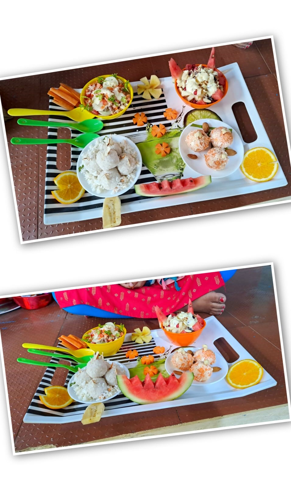
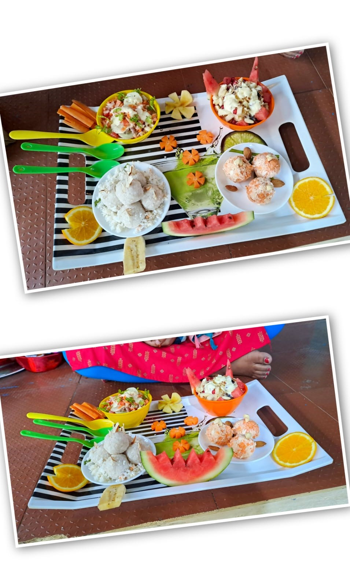
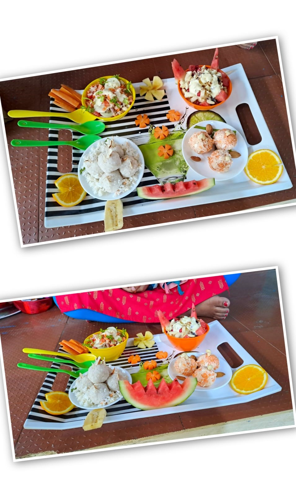

Gallery


 


Join us in spreading love, faith, and hope. Be part of our growing community.
One hundred years of St.Andrew's Church, Chengalpattu 1893–1993. September 2018 marked the 125th year of St.Andrew's Church, Chengalpattu. The history of St.Andrew's Church was originally written in 1993 for the centenary celebration. It was titled: "One Hundred Years Of St.Andrew's Church, Chengalpattu 1893–1993". For us this was a decisive occasion with unexpected results. The six-page article kindled the interest of several other congregations who wanted details of their sacred history to be researched and written for their jubilee celebrations.
Date: July 27, 2025
Time: 9:00 AM
Location: Athur, Chengalpattu
Date: Aug 3, 2025
Time: 11:00 AM
Location: Chengalpattu

At Grace Fellowship Church, every contribution goes towards building a stronger community of faith. Your donations help us support community outreach programs, organize events, maintain the church, and aid the underprivileged. No contribution is too small — together, we make a difference!
CSI Bishop New Begin Memorial Church
Balaji Street
Athur, Chengalpattu TN 603101
Phone: +91 8015186879
Email: cgodwinsam@gmail.com